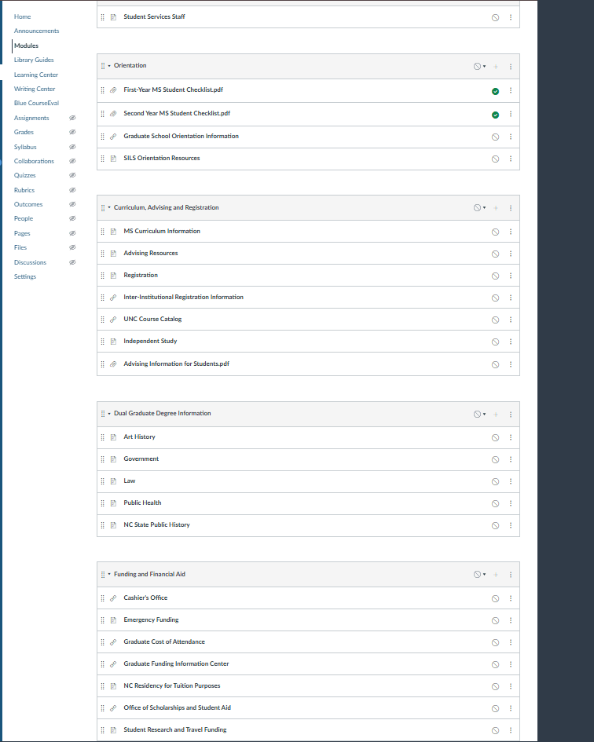
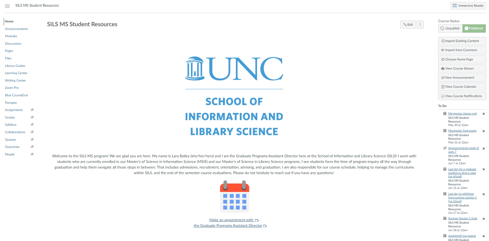
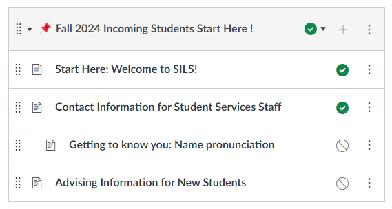
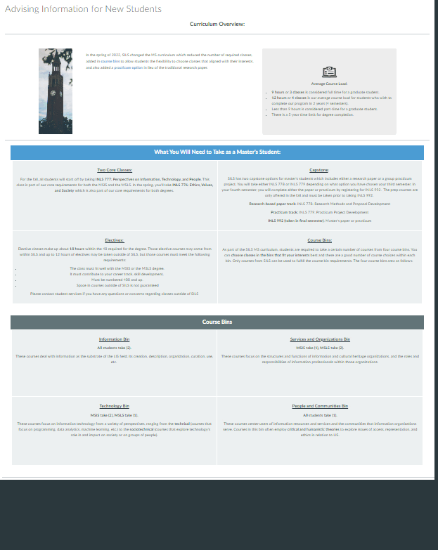

UNC SILS Resource Page Overhaul
Case Study
The UNC SILS (School of Information and Library Science) resource site is a critical tool for students, providing access to essential information about courses, graduation requirements, advising, career resources, department resources, and more. The previous site was extremely disorganized and difficult to navigate, often feeling like a scavenger hunt to find the necessary information. This project aimed to overhaul the site to make it more user-friendly, visually appealing, and accessible for all students.

Project Overview
The Challenge
The UNC SILS resource site had grown organically over time without a clear information architecture. With over 40 pages of content, the site was overwhelming and poorly organized, making it difficult for students to find what they needed. Key issues included inconsistent navigation, unclear labeling, and a lack of visual hierarchy.
Our Approach
I conducted user research through surveys and interviews with SILS students to understand their pain points and needs. Based on this feedback and stakeholder needs, I reorganized the content, improved navigation, and redesigned the visual interface to create a more intuitive and accessible resource site.
Key Objectives
- Consolidate and reorganize content for better findability
- Improve navigation and information architecture
- Enhance visual design and readability
- Ensure accessibility for all users
- Align with UNC SILS branding guidelines
Key Research Findings
1. Overwhelming Navigation
Students reported feeling lost when trying to find specific resources, with many describing the experience as a "scavenger hunt." The site lacked clear organization and had too many top-level navigation items.

2. Content Duplication
Many resources were duplicated across multiple pages, leading to inconsistency and confusion about which version was most current. Some pages had minimal content that could be consolidated.

3. Poor Visual Hierarchy
The site lacked visual cues to help users scan and find information quickly. Important content was often buried in long paragraphs without clear headings or sections.

Redesign Solutions
Information Architecture
- Consolidated 40+ pages into 23 well-organized pages
- Grouped content into 8 logical categories
- Created clear navigation paths for different user needs
Navigation & Findability
- Added emojis to module groups for visual recognition
- Created a "Get Started" page for new students
- Added quick-access buttons for frequently used resources
Visual Design
- Improved typography and visual hierarchy
- Added custom graphics and banners
- Used consistent styling aligned with SILS branding
Content Strategy
- Rewrote content for clarity and conciseness
- Added descriptive headings and subheadings
- Ensured consistent terminology across pages
Redesign Samples
The overhaul resulted in a more organized, visually appealing, and user-friendly resource site:
Streamlined Homepage
New homepage with quick-access buttons, welcome message, and clear navigation to major sections.

Organized Content Buckets
Content grouped into clear categories with emoji indicators for quick recognition.

Improved Content Pages
Clean, well-structured pages with clear headings and visual hierarchy.

Reflection
This project demonstrated the importance of user-centered design in academic resource sites. By listening to student feedback and analyzing their pain points, we were able to transform a confusing collection of pages into a cohesive, easy-to-use resource hub.
The most significant improvement was the consolidation of content from over 40 pages down to 23, organized into clear categories. This immediately made the site feel less overwhelming and more manageable for students.
If we had more time, we would implement a search functionality and conduct usability testing with the new design to identify any remaining pain points. We'd also explore creating personalized views for different student types (undergraduate, master's, PhD).
"The new navigation is much easier to use."
"The pages look on-brand with UNC SILS branding, and they are overall much nicer to look at."